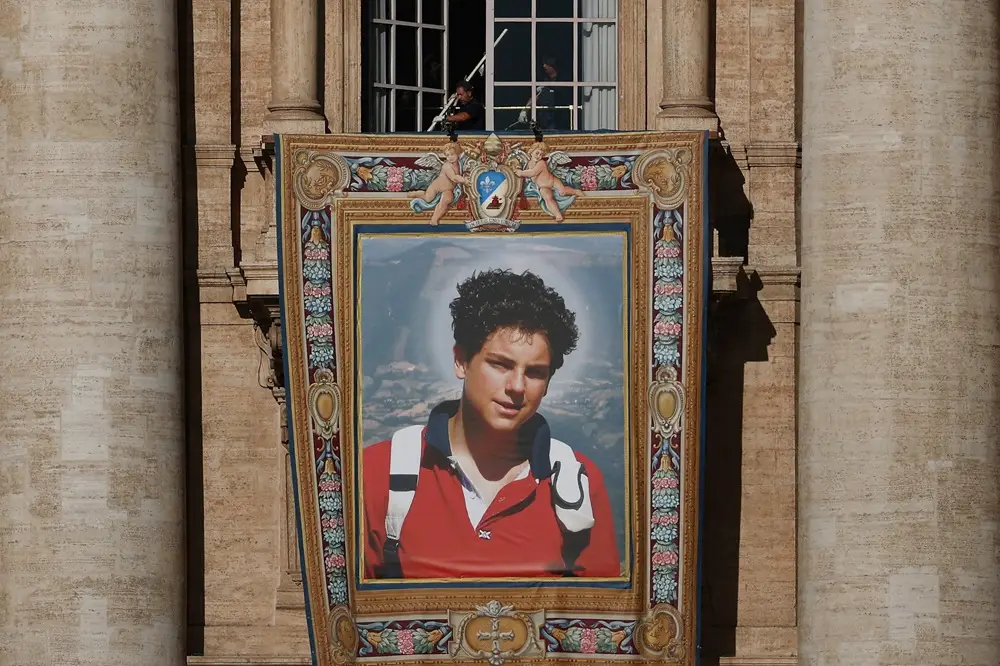

Canonização e Devoção
O caminho para a santidade de Carlo Acutis
Descubra o processo de canonização de Carlo Acutis e sua devoção entre os fiéis.
O Caminho para a Santidade
O processo de canonização de Carlo foi notavelmente rápido algo incomum na Igreja Católica, onde o processo pode levar décadas ou até séculos. Em 2018, foi declarado Venerável. Em 10 de outubro de 2020, foi beatificado pelo Papa Francisco na Basílica Superior de São Francisco, em Assis, após o reconhecimento do primeiro milagre. Em 2024, o Papa Francisco reconheceu o segundo milagre, abrindo caminho para a canonização.
A Canonização

Carlo foi canonizado em 7 de setembro de 2025 pelo Papa Leão XIV, em uma missa ao ar livre na Praça de São Pedro, no Vaticano, diante de cerca de 80 mil pessoas. Sua mãe, Antonia Salzano, levou ao altar o relicário contendo um fragmento do coração do filho. A canonização estava inicialmente marcada para abril de 2025, mas foi adiada devido à morte do Papa Francisco.
O Corpo e a Devoção

O corpo de Carlo está exposto em um túmulo de vidro no Santuário do Despojamento, na Basílica de Santa Maria Maior, em Assis. Curiosamente, ele está vestido com calça jeans e tênis Nike uma forma de representar sua juventude e proximidade com os jovens de hoje. Estima-se que mais de um milhão de pessoas já peregrinaram ao seu túmulo.
Mensagem para os Jovens
Carlo Acutis é visto como um modelo para a nova geração de católicos. Sua história mostra que é possível ser santo sem deixar de ser jovem amando videogames, tecnologia e esportes, mas colocando Deus em primeiro lugar. O Papa Francisco disse que o example de Carlo mostra aos jovens que "a verdadeira felicidade é encontrada colocando Deus em primeiro lugar e servindo-O em nossos irmãos e irmãs"